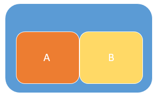
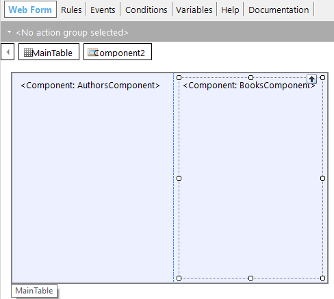
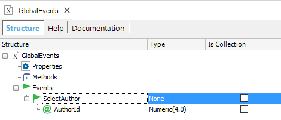
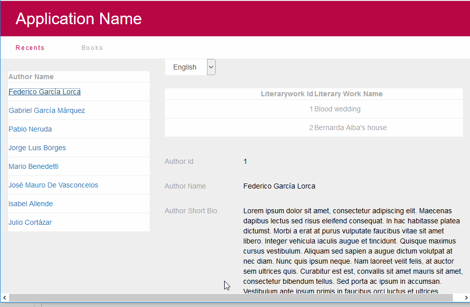

Most times it's necessary to implement a solution where one action in a Web Component object of the screen causes a reaction in another web component. For example, trigger an action in some web component if the user selects an item in a Menu (of another component of the screen). Since communication between the web components of the screen is a bit limited - the only feasible communication is between parents to children-, Global Events are very useful for enabling the GeneXus user to establish communication between Web Components that are disengaged (1).
Benefits of using Global Events on the web:
ExampleCommunicating with a sibling objectAn action in component A should trigger an action in component B.  Consider a hypothetical case where we have two sibling components, one of them ("AuthorsComponent") loads a list of Authors, and the other ("BooksComponent") filters the literary works of the author selected in the first component.  As both components have no communication with each other, the best way to trigger the refresh of the Component B's grid is to use Global Events. 1. Open the GlobalEvents external object and add an event called "SelectAuthor". Consider adding the necessary parameters there.  2. In the "AuthorsComponent" we call the "SelectAuthor" Global Event when the user activates a line of the grid.
"AuthorsComponent" code:
Event grid1.OnLineActivate
GlobalEvents.SelectAuthor(AuthorId)
Endevent
3. In "BooksComponent" we define the "SelectAuthor" Global Event. It receives the &authorId as a parameter and calls the grid refresh. &authorId is a variable present on the screen in this case.
"BooksComponent" code
Event GlobalEvents.SelectAuthor(&authorId)
grid1.Refresh()
Endevent
Here we've shown a particular example, but any combination of the localization of the components in the form is possible. The parent object of all the components can also define or invoke a Global Event. Note: In this scheme, there are N web components that can publish an event, and M web components which are subscribers to the events.
Then, another web component could subscribe to the "SelectAuthor" Global Event. For example, a component that shows the author's biography.  To try it yourself, download the sample Web Global Events sample for books.
Restrictions
(1)The traditional problem of web components communicationThe traditional ways to communicate between web components (solution without Global Events), are:
In sum, sibling components, cannot communicate with each other, and one web component cannot communicate with its parent or grandparents. |
| Backlinks | |
| Event Execution Scheme | Global Events |